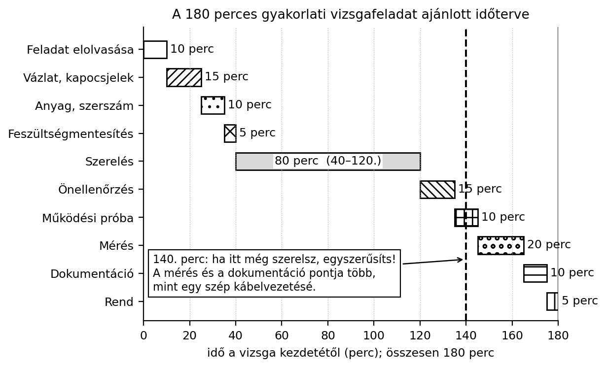

A szakmai vizsga gyakorlati része nem azt méri, hogy a tanuló „majdnem jól” dolgozik-e, hanem azt, hogy a vizsgafeladatot a szakmai szabályok, a biztonsági előírások és a dokumentációs követelmények szerint, önállóan és ellenőrizhetően végre tudja-e hajtani. A vizsgahelyzetben a szerelési idő szűkös, a feladatgyűjtemény változatos, és a vizsgáztató végig figyeli a munkafogásokat, nemcsak a végeredményt. Aki csak a kapcsolást ismeri elméletben, de a vizsgán először szembesül az időnyomással, a hibás méréssel vagy a sorrendi hibákkal, az gyakran pontokat veszít olyan részleteken, amelyek a műhelyben már rutinná válhattak volna. Ez az alfejezet a gyakorlati vizsga feladattípusait, az értékelési szempontokat, a tipikus vizsgahibákat és egy teljes kidolgozott vizsgafeladatot mutat be abból a célból, hogy a tanuló a vizsgán a tanműhelyi gyakorlatot tudja reprodukálni, ne pedig kapkodva improvizáljon.
Vizsgaszerkezet (egységes megjegyzés). A szakmai vizsga részeinek neve, száma, időtartama és pontozása a hatályos képzési és kimeneti követelményektől (programkövetelménytől) és a vizsgaszabályzattól függ; a 2020 utáni szakképzési rendszerben a vizsga jellemzően központi interaktív (írásbeli jellegű) vizsgarészből és projektfeladatból áll (ellenőrizendő: hatályos vizsgaleírás, a képző intézmény tájékoztatója). A könyv elméleti, számolási, rajzolvasási, szerelési, mérési, hibakeresési és szóbeli feladattípusai tanulási csoportosítás; az időkeretek és pontszámok tanulási javaslatok.
A gyakorlati vizsgafeladat általában a képzés szakirányához igazodik, és a tanműhelyben rendelkezésre álló eszközökön, oktatótáblákon, szerelőfalakon vagy zárt elosztószekrény-dobozban hajtják végre. A feladatok a következő fő csoportokba sorolhatók (ellenőrizendő: az aktuális vizsgaszabályzat szerinti feladattípusok és azok aránya):
A vizsgafeladat szinte mindig tartalmaz egy rövid dokumentációs részt is: a tanulónak be kell jelölnie a bekötött kapcsokat, ki kell töltenie a mérési jegyzőkönyv vagy a hibajegyzőkönyv vonatkozó rovatait, és esetenként meg kell neveznie a használt védelmi módot.
A gyakorlati vizsgán a következő ellenőrzőlista segít abban, hogy a tanuló a feladatot a sorrend és a biztonság szempontjából helyesen hajtsa végre. Ez a lista egyben a vizsgáztatók által figyelt fő pontok összefoglalása is.
Recept. Gyakorlati vizsga felkészülési ellenőrzőlista:
Ez az ellenőrzőlista a vizsgán is használható, de a gyakorlati időbeosztás miatt érdemes már a felkészülés során begyakorolni, hogy a lépések automatikusan kövessék egymást.
Nyomtasd ki, és a teljesített pontokat pipáld ki.
Előző nap
Reggel
Az elméleti részen
A gyakorlati részen
Utána
A mérési feladat a gyakorlati vizsgán nem csupán a mérőműszer leolvasását jelenti, hanem a biztonságos mérési sorrend betartását, a megfelelő mérési kategória és mérőzsinór használatát, valamint a mért értékek értékelését. A vizsgáztató figyeli, hogy a tanuló a feszültségmentességet mérés előtt ellenőrzi-e, a méréshatárt helyesen választja-e, és a mérési eredményt a jegyzőkönyvben rögzíti-e.
Hibakeresési eset. Példa egy hibakeresési vizsgafeladatra: a megépített áramkört a vizsgáztató egy előre meghatározott hibával látta el, például a lámpa fázisoldali vezetékét (a kapcsoló kimenetét) a nulla sínre kötötte be, vagy a védővezetőt elhagyta az aljzatból. A tanuló feladata a hiba megtalálása, az ok megnevezése és a javítás.
A hibakeresési vizsgafeladat végrehajtása:
A hibakeresési feladatban a vizsgáztató nem csak a hibát javító eredményt értékeli, hanem azt is, hogy a tanuló a biztonsági sorrendet betartotta, a méréseket a megfelelő eszközzel végezte, és a hibakeresés módszeres volt, nem találgatás.
Vizsgaformátumú gyakorló: a tünetből és a megadott mérési eredményből következtess. Kérdés minden esetben: mi a hiba oka, és hogyan javítod és ellenőrzöd újra? Javasolt idő esetenként 4–5 perc. A módszert a Hibakeresés épületvillamossági modelleken (40.3) és a Vezérlések hibakeresése (32.5) tanítja. Valós panelen minden eset az öt biztonsági szabállyal kezdődik; ellenállást csak feszültségmentesen mérsz, feszültség alatt csak oktatói engedéllyel, CAT III műszerrel. A vezérlési eseteknél a mért tekercs A2 vezetéke és a jelzőlámpák le vannak kötve.
| # | Tünet | Adott mérés (feszültségmentesen) |
|---|---|---|
| 1 | Váltókapcsolás: S2 csak az S1 egyik állásában kapcsolja E1-et. | A kötődobozban, E1 izzója kivéve: betáp L – 1. váltóvezeték: S1 egyik állásában ≈ 0 Ω; L – 2. váltóvezeték: mindkét állásban OL; a két váltóvezeték egymás között S1 másik állásában ≈ 0 Ω. |
| 2 | Csillárkapcsolás: mindkét billentyű bekapcsolva is csak E2.1 ég. | S3b zárva: betáp L – ↑2 ér a dobozban ≈ 0 Ω; ↑2 ér a dobozban – E2.2 fáziskapcsa OL. |
| 3 | Az aljzat működik, de a felülvizsgálaton nem felel meg. | PE-sín – az aljzat védőérintkezője: OL. |
| 4 | A FI old, amint a körben vagy ugyanazon FI másik körében fogyasztó üzemel. | A kör N-vezetőjét az N-sínről levéve: N – PE ≈ 0 Ω. |
| 5 | A kismegszakító a lámpa bekapcsolásakor azonnal old. | Kismegszakító ki, izzó kivéve, S zárva: a kapcsolt ér és az N között ≈ 0 Ω. |
| 6 | Direkt indítás: START-ra a K1 behúz, elengedéskor elejt. | K1 benyomva: 13–14 között ≈ 0 Ω; S1:13 – K1:13 között OL. |
| 7 | Direkt indítás: START-ra semmi nem történik. | S1 nyomva: F2 kimenet – K1 A1 OL; F2 kimenet – F1:95 ≈ 0 Ω; F1 95–96 OL. |
| 8 | A motor zúg, de nem indul. | Motor lekötve, K1 benyomva: 1–2 ≈ 0 Ω; 3–4 OL; 5–6 ≈ 0 Ω. |
| 9 | Reverzálás: „előre” és „hátra” gombra is ugyanarra forog. | Motor lekötve, K2 benyomva: betáp L1 – U1 ≈ 0 Ω; betáp L3 – W1 ≈ 0 Ω. |
| 10 | Y-Δ: átkapcsoláskor a kismegszakító old. | K2 benyomva: KT:68 – K3 A1 ≈ 0 Ω. |
A kártyákat és a megoldásokat a megadott alfejezetben találod; itt csak az összesítésük szerepel. A hibát mindig oktató építi be, feszültségmentes vagy törpefeszültségű modellbe.
| Készlet | Mit gyakorol? | Hol találod? |
|---|---|---|
| KH1–KH8 | kötéshibák | Kötések, sorkapcsok, csavarnyomaték és ellenőrzés |
| EK1–EK6 | lakáselosztó-modell | Lakáselosztó építése és bekötése |
| HK1–HK10 | épületvillamossági körök | Hibakeresés épületvillamossági modelleken |
| M1–M7 | motor beüzemelése | Motor kapocsbekötése és beüzemelése |
| VK1–VK10 | direkt, reverzáló, Y-Δ vezérlés | Vezérlések építése: direkt, reverzáló, Y-Δ |
| hibás rajzok; mért értékek | vezérlési feladatbankok | Vezérlések hibakeresése |
| 8–17. rajzfeladat | rajzolvasás, rajzhiba | Vezérlési rajzok olvasása és rajzolása |
| „Keresd meg a hibákat” | átadás előtti elosztószemle | Minőségbiztosítás és szerelői ellenőrzés |
| FI-hibatáblázat | téves vagy elmaradó kioldás | Áram-védőkapcsoló (FI) és kiegészítő védelem |
| diódamérés | dióda, LED, Zener, szabadonfutó dióda | Félvezető anyagok, dióda, LED és Zener-dióda |
| tranzisztoros fokozat | átütött meghajtó, MOSFET | Tranzisztorok és kapcsoló üzem |
| PNP/NPN érzékelők | háromvezetékes bekötés | Hő-, fény- és feszültségfüggő elemek és érzékelők |
| minta- és hibás jegyzőkönyv | kitöltés, „keresd a 10 hibát” | Jegyzőkönyv, szabványossági felülvizsgálat és hibakeresés |
A gyakorlati vizsgafeladat értékelése általában a következő szempontok szerint történik (ellenőrizendő: a konkrét vizsgaszabályzat vagy a vizsgaszervező által kiadott értékelési útmutató):
Szekrényszerelési feladatnál értékelési szempont lehet a darabigazolás is: ellenőrzőlistáját és kitöltött jegyzőkönyvét Az elosztóberendezések szabványai és típusai alfejezet „A darabigazolás elvégzése a gyakorlatban” szakasza adja.
Az alábbi ábra a kidolgozott vizsgafeladatot mutatja a szerelőfalon, a vizsgáztató által figyelt tíz értékelési ponttal: a feszültségmentesség igazolása (1), a vázlat és a valóság egyezése (2), az érvéghüvelyek, nyomatékok, rögzítések (3), a színjelölés (4), a PE a lámpatest védőkapcsán (5), a kapcsoló a fázist szakítja (6), a folytonossági mérések (7), a szigetelésmérés (8), a működési próba és a FI-teszt engedély után (9), végül a jegyzőkönyv és a rend (10).
A pontok sorrendje követi a munka menetét, így a falon végighaladva önellenőrzésre is használható. A HTML-kiadásban az egyes pontokra mutatva megjelenik, mit néz a vizsgáztató.
A biztonsági pontok az értékelésben kiemeltek: a feszültségmentesítés öt szabályának hiánya, a feszültség alatti mérés tiltása, a védővezető elhagyása vagy a védelmek kiiktatása súlyos szabálytalanságnak számít, és a vizsgafeladatot érvénytelenítheti.
Egységes értékelési rubrika. A könyv minden gyakorlati feladatlapja és a próbavizsga ugyanezt a hat kategóriát, ugyanezeket a súlyokat és ugyanazt a kizáróhiba-listát használja; a feladatlapok legfeljebb a kategórián belüli, feladatra szabott részpontokat adják meg. A súlyozás tanulási javaslat; a hivatalos vizsgán a vizsgaszervező értékelési útmutatója érvényes (ellenőrizendő: a hatályos vizsgaleírás és értékelési útmutató). A lapot nyomtasd ki, és az „Elért” és a „Megjegyzés” oszlopot a próba közben töltsd ki. Üres, közös fejléces változata: Nyomtatható jegyzőkönyvek és sablonok, F1.
| Kategória | Részszempont | Elérhető | Elért | Megjegyzés |
|---|---|---|---|---|
| 1. Rajz és terv olvasása, készítése (15 p) | feladatértelmezés, vázlat | 5 | ||
| a kapcsolás a terv szerint (rajz–valóság egyezés) | 5 | |||
| kapocsjelek (L/N/PE, 1/2, 13/14, A1/A2, U1/V1/W1) | 5 | |||
| 2. Szerelés minősége (25 p) | érvéghüvely, csupaszolási hossz | 5 | ||
| rögzítés, meghúzási nyomaték | 5 | |||
| vezetékvezetés, feliratozás | 5 | |||
| érszínek (barna/fekete/szürke, kék, zöld-sárga) | 5 | |||
| PE minden testen, folytonosan | 5 | |||
| 3. Mérés és jegyzőkönyv (20 p) | műszer, méréshatár, műszerellenőrzés | 5 | ||
| mérési sorrend (feszültségmentes mérések előbb) | 5 | |||
| értékelés határértékkel | 5 | |||
| kitöltött, aláírt mérési jegyzőkönyv | 5 | |||
| 4. Működés és működési próba (20 p) | engedély után a feladat minden funkciója működik | 15 | ||
| a feladat a megadott időn belül kész | 5 | |||
| 5. Dokumentáció és átadás (10 p) | rajz bejelölése, hibajegyzőkönyv | 5 | ||
| átadás rövid szóbeli összefoglalóval | 5 | |||
| 6. Munkavédelem és rend (10 p) | öt szabály a vizsgáztató előtt, a feszültségvizsgáló ellenőrzése | 5 | ||
| védőeszközök, rendezett munkaterület | 5 | |||
| Összesen | 100 |
Kizáró hibák (minden gyakorlati feladatlapon és a próbavizsgán azonosak; a feladat 0 pont, vagy a vizsgáztató megszakítja):
Az értékelőlap a munka menetét követi; a fenti ábra tíz értékelési pontja a rubrika kategóriáiba sorolható (1: munkavédelem; 2: rajz; 3–6: szerelés; 7–8: mérés; 9: működés; 10: dokumentáció és rend). Az időt a gyakorlati vizsgán is be kell osztani: az alábbi időterv egy 180 perces szerelési és mérési feladatra ad ajánlást.

Vesd össze az időtervet az értékelőlappal: a szerelés az idő közel felét viszi el, a szerelési minőség mégis csak 25 pontot ér, a mérés, a működési próba és a dokumentáció viszont együtt 50 pontot – ezekre mindig hagyj időt. A próbavizsgán jegyezd fel, melyik szakasznál csúsztál, és a következő próbánál ott tervezz tartalékot.
A gyakorlati vizsgán a leggyakoribb hibák a következők:
Hibás kapocsbekötés. A tanuló a fázist a nulla sínre, a nullát a védővezető sínre köti, vagy váltókapcsolónál a közös pont és egy váltókapocs vezetékét felcseréli. (Egypólusú kapcsoló két kapcsa egyenértékű; ott a hiba az, ha a kapcsoló a nullát szakítja.) A kapcsoló egypólusú bekötésénél a fázisnak a kapcsoló bemenetére kell kerülnie; a nulla soha nem kerülhet kapcsolóba.
Helytelen mérési sorrend. A tanuló a feszültségmentességet nem ellenőrzi, vagy feszültség alatt próbál ellenállást mérni. Az ellenállásmérést mindig feszültségmentes állapotban, a feszültségvizsgálóval való ellenőrzés után kell végezni.
A rajz és a valóság eltérése. A tanuló nem egyezteti a bekötést a kapcsolási rajzzal, így a kész áramkör nem a feladatban kért funkciót valósítja meg. A vizsgán a rajz–valóság–mérés hármas állandó ellenőrzése elengedhetetlen.
Hiányos dokumentáció. A tanuló a mérési jegyzőkönyvet nem tölti ki, a mért értékekhez nem ír mértékegységet, vagy nem jelöli be a kapcsokat a rajzon. A dokumentáció önmagában is pontszámot ér.
Kapkodás a működési próbánál. A tanuló a feszültség alá helyezés előtt nem ellenőrzi a munkaterületet, vagy a vizsgáztató engedélye nélkül kapcsol rá a hálózatra. Ez biztonsági szempontból súlyos hiba.
Gyakorlás: ennek az alfejezetnek a kidolgozott példái, gyakorlatai és megoldással ellátott feladatai az Összefoglaló feladatgyűjtemény villanyszerelő tanulóknak című kötet 44.3 szakaszában találhatók.
A gyakorlati vizsga a szakmai ismeretek alkalmazását méri biztonságos és dokumentált keretek között. A feladatok négy fő típusa a szerelési, vezérlési, mérési és hibakeresési feladat. A sikeres vizsgafeladat alapja a felkészülési ellenőrzőlista: a feladat értelmezése, vázlat, anyag- és szerszámellenőrzés, feszültségmentesítés az öt biztonsági szabály szerint, gondos szerelés, önellenőrzés, engedély a feszültség alá helyezésre, működési próba, mérés és dokumentáció. A hibakeresési feladatban a szisztematikus módszer a tünet rögzítéséből, hipotézis felállításából, mérésből, a hiba azonosításából, javításból és újraellenőrzésből áll. Az értékelés a munkabiztonságot, a szerelési minőséget, a bekötés helyességét, a mérést, a hibakeresést, a működési próbát és a dokumentációt egyaránt figyeli. A leggyakoribb hibák: rossz kapocsbekötés, helytelen mérési sorrend, a rajz és a valóság eltérése, hiányos dokumentáció és kapkodás a működési próbánál. A biztonsági szabályok megsértése a legsúlyosabb értékelési hiba, ezért a feszültségmentesítés és a mérési kategória betartása megkerülhetetlen.
A szöveg a magyarországi szakképzési gyakorlatot, a kisfeszültségű villamos berendezésekre vonatkozó MSZ HD 60364 sorozat ellenőrzési elveit és a munkavédelmi előírásokat követi. A konkrét vizsgafeladat-típusok, az értékelési szempontok, a mérési határértékek és a vizsgaszabályzat szerinti eljárások az aktuális szakképzési és vizsgaszabályozás szerint változhatnak (ellenőrizendő: aktuális vizsgaszabályzat, értékelési útmutató, szabványkiadás, gyártói adatlapok).